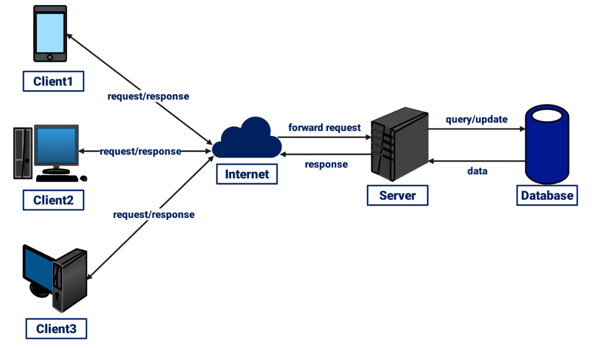
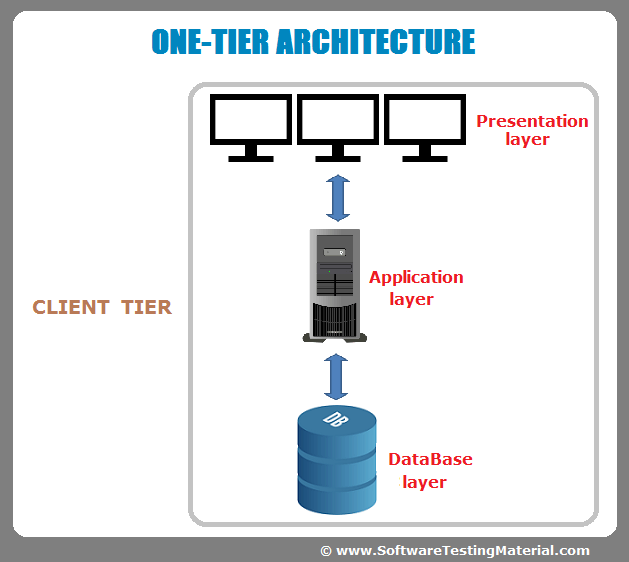
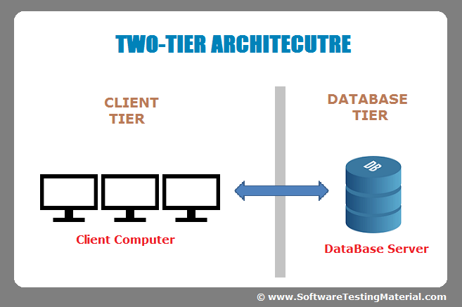
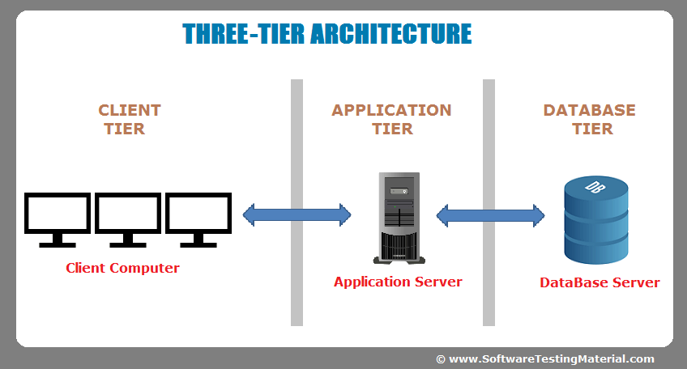
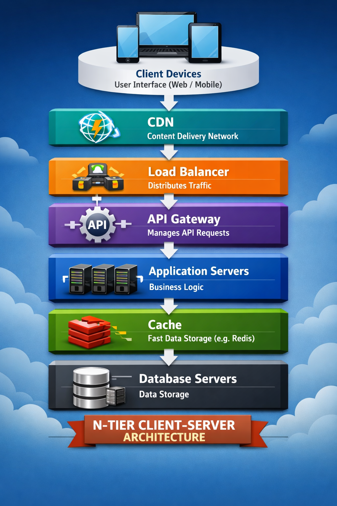

System Design Mastery
Master scalable systems with premium insights
🖥️ Client–Server Architecture
📌 What is Client–Server Architecture?
Client–Server Architecture is a computing model where clients request services or data, and servers process those requests and return responses over a network.
Client → sends
request
Server → processes request and returns response
💡 In simple terms: Client asks → Server answers
Example:
When you open a website, your browser (client) sends a request to a web server, which
returns
the webpage.

⚙️ Key Components
1️⃣ Client
The client is the user-side application that interacts with the system.
Responsibilities:
- UI interaction
- Send requests
- Display server responses
Examples:
- Web browsers (Chrome)
- Mobile apps
- Desktop applications
2️⃣ Server
The server is a powerful system that processes client requests and provides services or data.
Responsibilities:
- Process requests
- Execute business logic
- Access databases
- Send responses
Examples:
- Web servers (Apache, Nginx)
- Database servers (MySQL, PostgreSQL)
3️⃣ Network
The network is the communication channel between client and server.
Protocols used:
- HTTP / HTTPS
- TCP/IP
- DNS
Example:
DNS converts google.com → IP address so the request reaches the correct server.
🔄 How Client–Server Communication Works
Step-by-step flow:
User performs an action : Example: Clicks a link.
Client sends request : Usually an HTTP request to a server.
Request travels through network : Using TCP/IP to server IP address.
Server processes request : Server may:
- run business logic
- query database
- fetch resources
Server sends response : Example:
- HTML webpage
- JSON data
- confirmation message
Client renders response : Browser or app displays the result.
🏗️ Types of Client–Server Architecture
1️⃣ 1-Tier Architecture (Monolithic)
Single System : All layers (UI, logic, and data) are integrated into one system.
Local Data Storage : Data is stored locally on the same machine or on a shared drive.

Example:
Microsoft Excel, Local desktop applications
Use Cases
One-tier architecture is suitable for personal use applications or scenarios where:
- The application is used by a single user or a small group.
- There is no need for real-time data sharing or collaboration.
- The system operates in environments with limited or no internet connectivity.
✅ Pros
- Simple
- No network communication ( Does not rely on network connectivity, making it ideal for offline use)
❌ Cons
- Not scalable
- Only single user
- Hard to maintain
2️⃣ 2-Tier Architecture
Two
layers:
Client → Server (Database + Logic)
Example:
Desktop application directly connected to database.
The client directly communicates with the database server.
Client → Database Server
Example:
Local Systems: Applications where the client and server are on the same network or have
limited users.

✅ Pros
- Simple
- Faster for small systems
❌ Cons
- No security because client directly to database so no secure for data in database
- Limited scalability
- Heavy load on server
- Hard to maintain many clients
3️⃣ 3-Tier Architecture (Most Common)
We have Three layers
Layers:
1️⃣ Presentation Layer → UI ( where users interact with the system )
2️⃣ Application Layer → Business logic ( this layer processes user requests, applies business rules, and communicates with the data tier )
3️⃣ Data Layer → Database ( storage layer responsible for managing and retrieving data )
Example:
Typical web application.
Browser →
Backend API → Database

✅ Pros
- Scalable
- Maintainable
- Secure ( Due to client can communicate to server not database )
❌ Cons
- More complex
- Slight latency
4️⃣ N-Tier Architecture
Extends the 3-tier model with additional layers for complex, scalable systems.

Example:
Large platforms like : Netflix, Amazon, Spotify
✅ Pros
- Highly scalable
- Fault tolerant
- Independent services
❌ Cons
- Complex
- Hard to debug
- Requires DevOps
✅ Advantages of Client–Server Architecture
1️⃣ Centralized
Management
All data and logic is managed on the server.
2️⃣
Scalability
Servers can scale:
Vertical scaling
(bigger
machine)
Horizontal scaling
(more servers)
3️⃣ Data
Integrity
Data stored centrally → consistent data.
4️⃣
Resource
Sharing
Many clients can use the same resources.
⚠️ Challenges
1️⃣ Single Point of Failure
If the server fails → system stops.
Solution:
- Replication
- Failover
- Load balancing
2️⃣ Performance Bottleneck
Too many requests can overload server.
Solution:
- Caching
- Load balancing
- Scaling
3️⃣ Complexity
Large distributed systems require:
- Monitoring
- DevOps
- Orchestration
🚀 Scaling Client–Server Architecture
1️⃣ Use Load Balancer
Distributes requests across multiple servers.
2️⃣ Use Caching
Stores frequently used data.
Examples:
Redis
CDN
Benefits:
Faster response
Reduced database
load
3️⃣ Use Horizontal Scaling
Add more servers instead of increasing one server’s power.
4️⃣ Use Microservices
Break monolithic systems into small independent services.
Example services:
User service
Payment
service
Product
service
🌍 Real-World Examples
📧 Email Systems
Client:
Gmail app
Outlook
Server:
Mail server
Protocols:
SMTP
IMAP
POP3
☁️ Cloud Computing
Apps communicate with cloud servers using APIs.
Examples:
AWS
Google Cloud
Azure
🎯Summary
Client–Server
Architecture is a system design model where clients send requests and servers
process them and
return responses over a network.
It separates the user interface from backend processing and
data storage.
This architecture is widely used in web applications, cloud
systems, and enterprise software.
Check out this link for differences between all architectures